Квартира · элитный модерн (quiet luxury)
Листов: 105 · блокеров: 1 · замечаний: 174
01-decorator-cover.svg — Титульный лист (decorator)
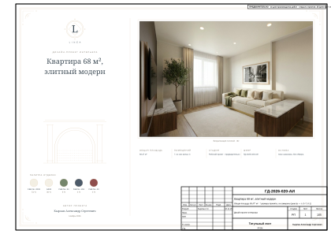
02-draftsman-general.svg — Общие данные (draftsman)
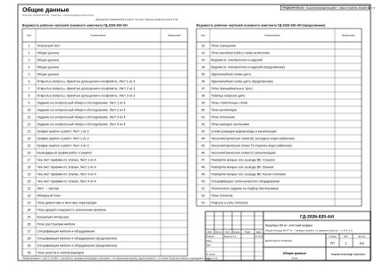
03-draftsman-general-2.svg — Общие данные (draftsman)
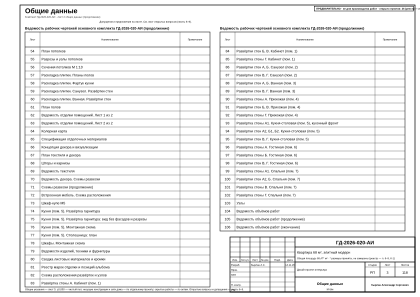
04-draftsman-general-3.svg — Общие данные (draftsman)
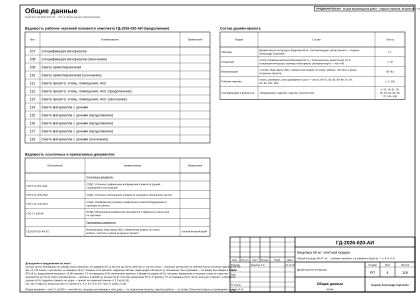
05-foreman-open-issues.svg — Открытые вопросы, принятые допущения и конфликты. Лист 1 из 3 (foreman)
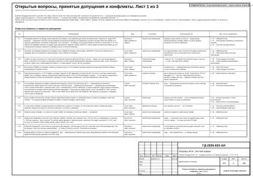
06-foreman-open-issues-2.svg — Открытые вопросы, принятые допущения и конфликты. Лист 2 из 3 (foreman)
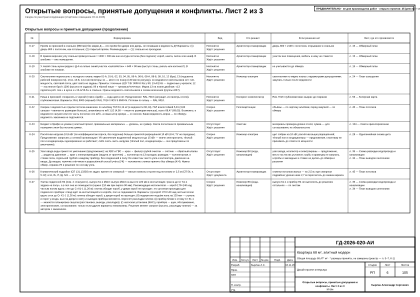
07-foreman-open-issues-3.svg — Открытые вопросы, принятые допущения и конфликты. Лист 3 из 3 (foreman)
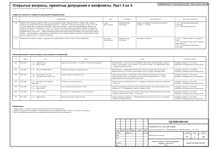
08-foreman-survey-task.svg — Задание на контрольный обмер и обследование. Лист 1 из 4 (foreman)
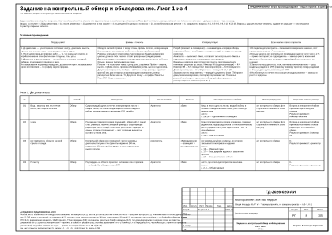
09-foreman-survey-task-2.svg — Задание на контрольный обмер и обследование. Лист 2 из 4 (foreman)
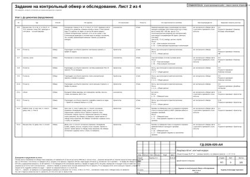
10-foreman-survey-task-3.svg — Задание на контрольный обмер и обследование. Лист 3 из 4 (foreman)
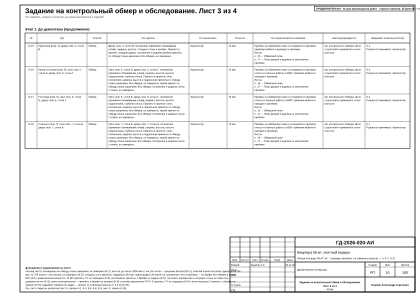
11-foreman-survey-task-4.svg — Задание на контрольный обмер и обследование. Лист 4 из 4 (foreman)
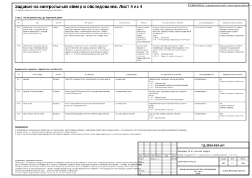
12-foreman-procurement.svg — График закупок и работ. Лист 1 из 3 (foreman)
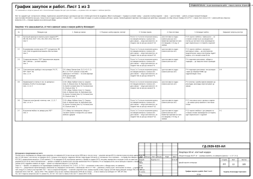
13-foreman-procurement-2.svg — График закупок и работ. Лист 2 из 3 (foreman)
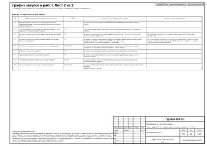
14-foreman-procurement-3.svg — График закупок и работ. Лист 3 из 3 (foreman)
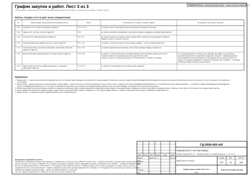
15-architect-obmer.svg — Обмерный план (architect)
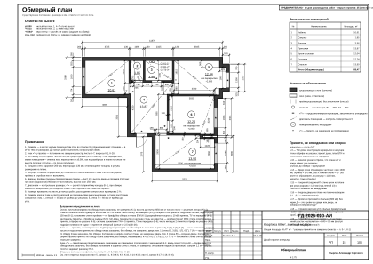
16-architect-demolition.svg — План демонтажа и монтажа перегородок (architect)
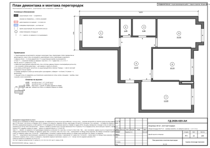
17-architect-doors.svg — План дверей и ведомость заполнения проёмов (architect)
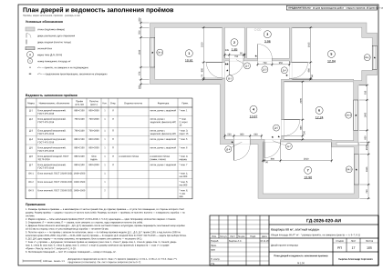
18-interior-designer-concept.svg — Концепция интерьера (interior-designer)
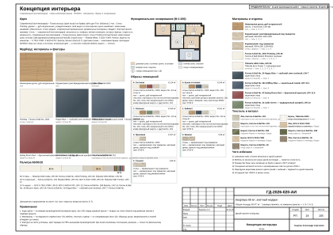
19-interior-designer-furniture.svg — План расстановки мебели (interior-designer)
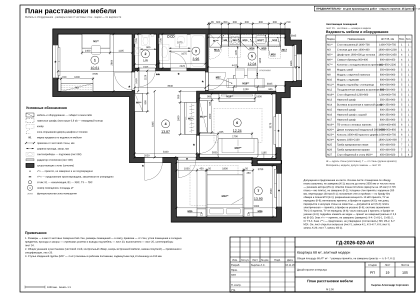
20-interior-designer-spec.svg — Спецификация мебели и оборудования (interior-designer)
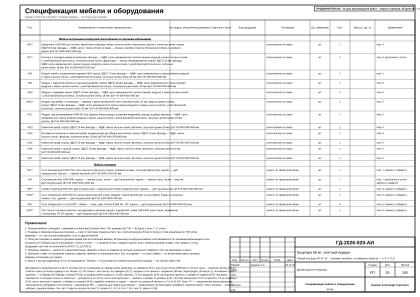
21-interior-designer-spec-2.svg — Спецификация мебели и оборудования (продолжение) (interior-designer)
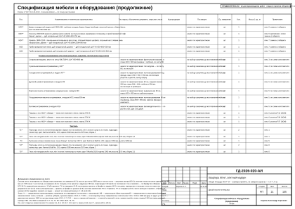
22-interior-designer-spec-3.svg — Спецификация мебели и оборудования (продолжение) (interior-designer)
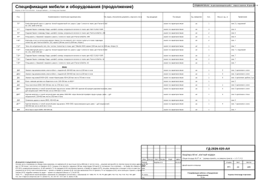
23-electrical-engineer-sockets.svg — План розеток и электровыводов (electrical-engineer)
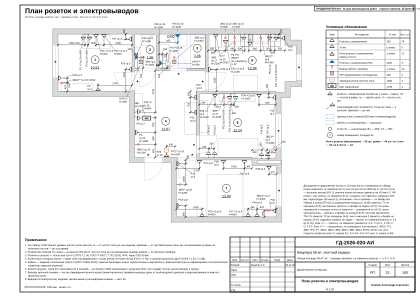
24-electrical-engineer-lighting.svg — План освещения (electrical-engineer)
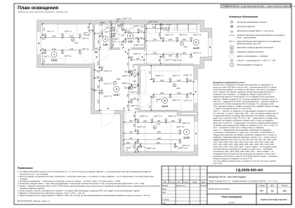
25-electrical-engineer-switches.svg — План выключателей и схема включения (electrical-engineer)
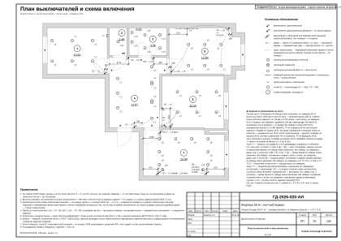
26-electrical-engineer-schedule.svg — Ведомость электроточек и изделий (electrical-engineer)
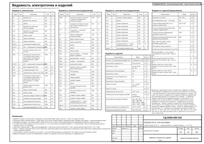
27-electrical-engineer-schedule-2.svg — Ведомость электроточек и изделий (продолжение) (electrical-engineer)
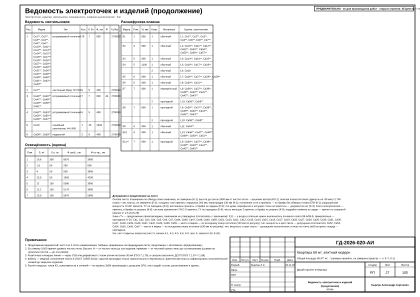
28-electrical-engineer-panel.svg — Однолинейная схема щита (electrical-engineer)
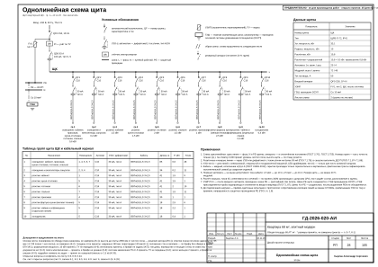
29-electrical-engineer-panel-2.svg — Однолинейная схема щита (продолжение) (electrical-engineer)
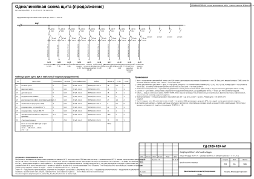
30-electrical-engineer-routing.svg — План принципиальных трасс (electrical-engineer)
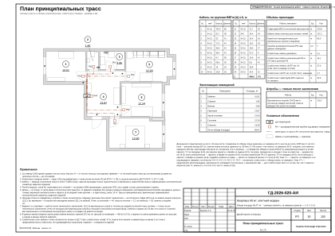
31-electrical-engineer-low-current.svg — План слаботочных сетей (electrical-engineer)
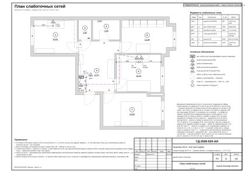
32-hvac-engineer-ventilation.svg — План вентиляции (hvac-engineer)
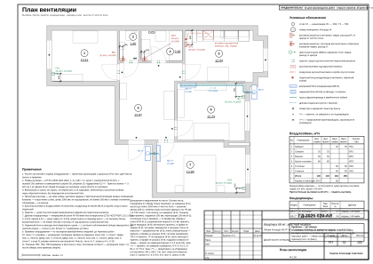
33-hvac-engineer-heating.svg — План отопления (hvac-engineer)
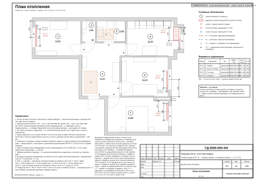
34-plumbing-engineer-vyvody.svg — План выводов сантехники (plumbing-engineer)
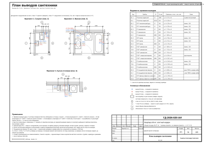
35-plumbing-engineer-razvodka.svg — Схема разводки водопровода и канализации (plumbing-engineer)
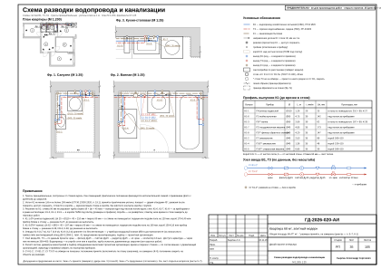
36-plumbing-engineer-axon-v1.svg — Аксонометрическая схема В1 (холодное водоснабжение) (plumbing-engineer)
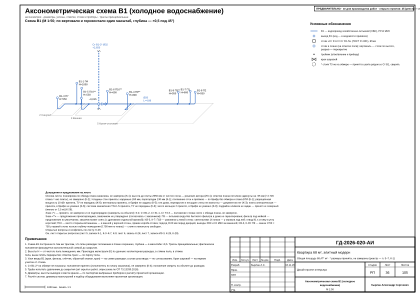
37-plumbing-engineer-axon-t3.svg — Аксонометрическая схема Т3 (горячее водоснабжение) (plumbing-engineer)
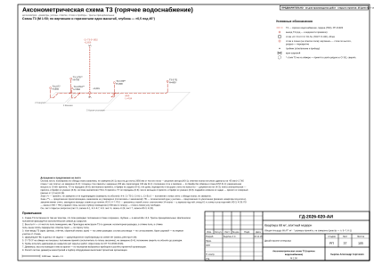
38-plumbing-engineer-axon-k1.svg — Аксонометрическая схема К1 (канализация) (plumbing-engineer)
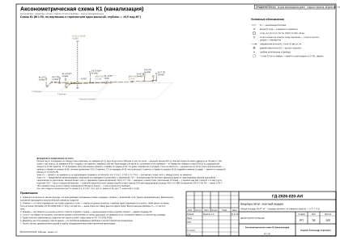
39-plumbing-engineer-vk-walls-2.svg — Развёртки мокрых зон: выводы ВК. Санузел (plumbing-engineer)
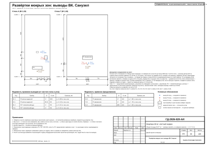
40-plumbing-engineer-vk-walls-3.svg — Развёртки мокрых зон: выводы ВК. Ванная (лист 1 из 2) (plumbing-engineer)
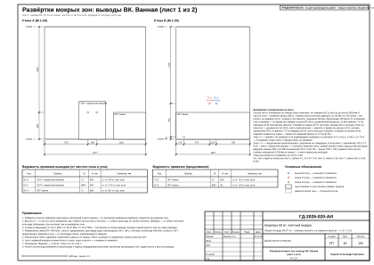
41-plumbing-engineer-vk-walls-3-2.svg — Развёртки мокрых зон: выводы ВК. Ванная (лист 2 из 2) (plumbing-engineer)
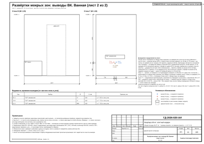
42-plumbing-engineer-vk-walls-5.svg — Развёртки мокрых зон: выводы ВК. Кухня-столовая (plumbing-engineer)
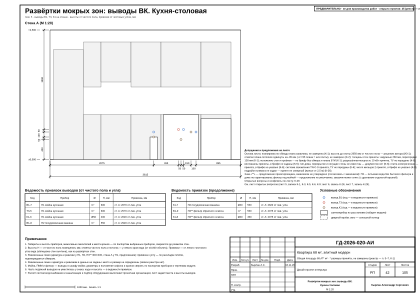
43-plumbing-engineer-spec-equipment.svg — Спецификация сантехнического оборудования (plumbing-engineer)
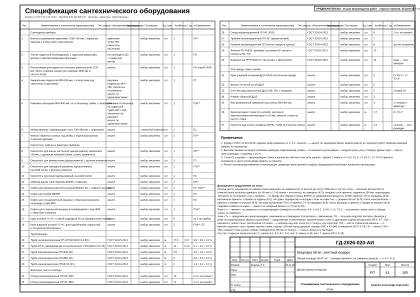
44-lighting-designer-lighting-spec.svg — Техническое задание на подбор светильников (lighting-designer)
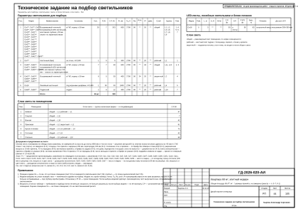
45-drywall-installer-ceiling.svg — План потолков (drywall-installer)
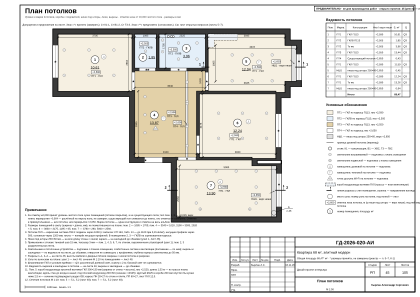
46-drywall-installer-ceiling-sections.svg — Разрезы и узлы потолков (drywall-installer)
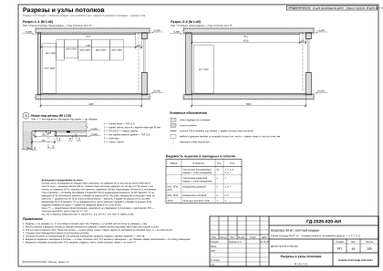
47-drywall-installer-ceiling-sections-2.svg — Разрезы и узлы потолков (продолжение) (drywall-installer)
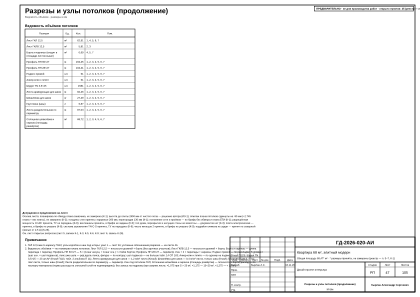
48-drywall-installer-ceiling-sections-3.svg — Сечения потолков М 1:10 (drywall-installer)
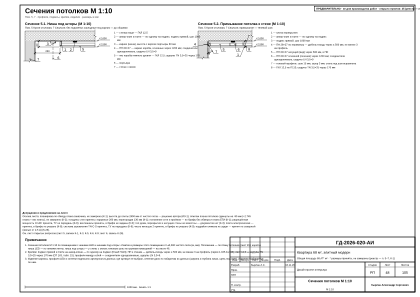
49-tiler-tile-floors.svg — Раскладка плитки. Планы полов (tiler)
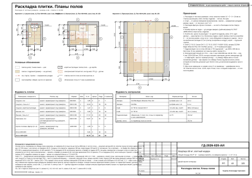
50-tiler-tile-extra.svg — Раскладка плитки. Фартук кухни (tiler)
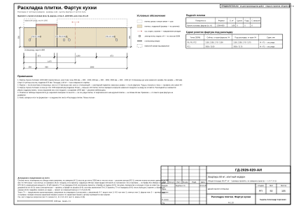
51-tiler-tile-walls-r2.svg — Раскладка плитки. Санузел. Развёртки стен (tiler)
52-tiler-tile-walls-r3.svg — Раскладка плитки. Ванная. Развёртки стен (tiler)
53-finisher-floors.svg — План полов (finisher)
54-finisher-finish-schedule.svg — Ведомость отделки помещений. Лист 1 из 2 (finisher)
55-finisher-finish-schedule-2.svg — Ведомость отделки помещений. Лист 2 из 2 (finisher)
56-colorist-color-card.svg — Колерная карта (colorist)
57-colorist-materials-spec.svg — Спецификация отделочных материалов (colorist)
58-decorator-decor-concept.svg — Концепция декора и визуализации (decorator)
59-decorator-decor-plan.svg — План текстиля и декора (decorator)
60-decorator-curtains.svg — Шторы и карнизы (decorator)
61-decorator-textile-schedule.svg — Ведомость текстиля (decorator)
62-decorator-decor-schedule.svg — Ведомость декора. Схемы развески (decorator)
63-decorator-decor-schedule-2.svg — Схемы развески (продолжение) (decorator)
64-furniture-maker-furn-plan.svg — Встроенная мебель. Схема расположения (furniture-maker)
65-furniture-maker-furn-m5.svg — Шкаф-купе М5 (furniture-maker)
66-furniture-maker-furn-kitchen-5a.svg — Кухня (пом. 5). Развёртка гарнитура (furniture-maker)
67-furniture-maker-furn-kitchen-5a-mount.svg — Кухня (пом. 5). Монтажная схема (furniture-maker)
68-furniture-maker-furn-mount.svg — Шкафы. Монтажная схема (furniture-maker)
69-furniture-maker-furn-schedule.svg — Ведомости изделий, техники и фурнитуры (furniture-maker)
70-draftsman-registers.svg — Реестр марок отделки и позиций альбома (draftsman)
71-draftsman-elev-key.svg — Схема расположения развёрток и узлов (draftsman)
72-draftsman-elev-r1-1.svg — Развёртки стен А, Б. Кабинет (пом. 1) (draftsman)
73-draftsman-elev-r1-2.svg — Привязки электроточек, стена А. Кабинет (пом. 1) (draftsman)
74-draftsman-elev-r1-3.svg — Развёртка стены В. Кабинет (пом. 1) (draftsman)
75-draftsman-elev-r1-4.svg — Развёртка стены Г. Кабинет (пом. 1) (draftsman)
76-draftsman-elev-r2-1.svg — Развёртки стен А, Б, В. Санузел (пом. 2) (draftsman)
77-draftsman-elev-r2-2.svg — Развёртка стены Г. Санузел (пом. 2) (draftsman)
78-draftsman-elev-r2-3.svg — Привязки электроточек и выводов ВК, стена Г. Санузел (пом. 2) (draftsman)
79-draftsman-elev-r3-1.svg — Развёртки стен А, Б. Ванная (пом. 3) (draftsman)
80-draftsman-elev-r3-2.svg — Развёртки стен В, Г. Ванная (пом. 3) (draftsman)
81-draftsman-elev-r3-3.svg — Привязки электроточек и выводов ВК, стена Г. Ванная (пом. 3) (draftsman)
82-draftsman-elev-r4-1.svg — Развёртка стены А. Прихожая (пом. 4) (draftsman)
83-draftsman-elev-r4-2.svg — Развёртки стен Б, В. Прихожая (пом. 4) (draftsman)
84-draftsman-elev-r4-3.svg — Развёртка стены Г. Прихожая (пом. 4) (draftsman)
85-draftsman-elev-r4-4.svg — Привязки электроточек, стена Г. Прихожая (пом. 4) (draftsman)
86-draftsman-elev-r5-1.svg — Развёртка стены А1. Кухня-столовая (пом. 5), кухонный фронт (draftsman)
87-draftsman-elev-r5-2.svg — Привязки электроточек и выводов ВК, стена А1. Кухня-столовая (пом. 5) (draftsman)
88-draftsman-elev-r5-3.svg — Развёртки стен А2, Б1, Б2. Кухня-столовая (пом. 5) (draftsman)
89-draftsman-elev-r5-4.svg — Развёртки стен В, Г. Кухня-столовая (пом. 5) (draftsman)
90-draftsman-elev-r6-1.svg — Развёртки стен А, Б. Гостиная (пом. 6) (draftsman)
91-draftsman-elev-r6-2.svg — Привязки электроточек, стена А. Гостиная (пом. 6) (draftsman)
92-draftsman-elev-r6-3.svg — Развёртки стен В, Г. Гостиная (пом. 6) (draftsman)
93-draftsman-elev-r7-1.svg — Развёртки стен А1, А2. Спальня (пом. 7) (draftsman)
94-draftsman-elev-r7-2.svg — Развёртка стены Б. Спальня (пом. 7) (draftsman)
95-draftsman-elev-r7-3.svg — Развёртка стены В. Спальня (пом. 7) (draftsman)
96-draftsman-elev-r7-4.svg — Привязки электроточек, стена В. Спальня (пом. 7) (draftsman)
97-draftsman-elev-r7-5.svg — Развёртка стены Г. Спальня (пом. 7) (draftsman)
98-draftsman-nodes.svg — Узлы (draftsman)
99-estimator-boq.svg — Ведомость объёмов работ (estimator)
100-estimator-boq-2.svg — Ведомость объёмов работ (продолжение) (estimator)
101-estimator-boq-3.svg — Ведомость объёмов работ (окончание) (estimator)
102-estimator-spec.svg — Спецификация материалов (estimator)
103-estimator-spec-2.svg — Спецификация материалов (окончание) (estimator)
104-estimator-estimate.svg — Смета ориентировочная (estimator)
105-estimator-estimate-2.svg — Смета ориентировочная (окончание) (estimator)